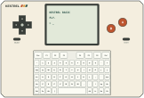
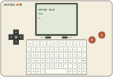
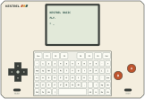

ClockworkPi uConsole
A fixed control strip fits between the display and thumb keyboard. The D-pad and four action buttons occupy opposite ends.
Photo on the ClockworkPi forum ↗Handheld games console & BASIC computer
The dev board carries the two USB-C receptacles. One connects to the USB–UART bridge, the other to the ESP32-C6 serial/JTAG interface. USB-A host peripherals would require additional host hardware and a 5 V supply.
The keyboard and eight game controls connect through separate internal I²C headers. This keeps the external accessory socket available during play. The carrier uses hand-solderable headers. KiCad’s board checks reported zero violations and zero unconnected pads. Select the microSD breakout by its exact footprint and pin order. The prototype is USB-powered. Battery charging, enclosure fit and operation with real peripherals still need verification.
Download electrical notes ↗A fixed control strip fits between the display and thumb keyboard. The D-pad and four action buttons occupy opposite ends.
Photo on the ClockworkPi forum ↗
Both hands grip the keyboard half. The D-pad and action buttons sit at its upper corners, with the QWERTY rows below.
Photo by Dedoimedo ↗
Game controls stay on the outer grips. Sliding the screen up exposes a keyboard between the hands.
Photo from China-Gadgets ↗Three ways to hold the same wide shell. Each drawing uses the same keyboard and screen size. Print the PDF at 100% and check the scale bar before testing your thumb reach.

The original Game Boy Advance puts its D-pad and diagonal A/B pair at the sides, with Start and Select below the D-pad. For Kestrel, try a tighter A/B pair and move the menu keys away from the action thumb.
Nintendo’s control diagram ↗
The OpenPandora puts its game controls on the keyboard half, above the typing rows. Kestrel can borrow that thumb position with a fixed screen. Try holding a diagonal while rolling your right thumb between A and B.
OpenPandora hardware ↗
This Kestrel variation moves both thumbs lower. The GPD WIN 4 solves interference between gaming and typing by sliding the screen over its keyboard. Here the keys stay exposed and share the lower deck with the controls. Test for accidental key presses.
GPD WIN 4 keyboard design ↗The D-pad and action buttons sit beside the screen. The keyboard stays clear of both thumbs during play.
Concept renders. Port positions, key legends and fit are illustrative.